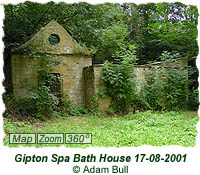

|
|
Taking the Waters in Old Leeds
The following report was written by John Billingsley (General Editor, Northern Earth) and has been reproduced with his permission.
Although wells and springs have long been sacred in Britain, and therapeutic bathing known at least since the Roman Occupation, our word 'spa' (in northern dialect, 'spaw-') derives from the Belgian town of that name.
The English from the sixteenth century took to visiting Spa and other mineral waters of the continent, and applied the name generically to such springs here - not an act that would be sanctioned by the European Commissioners of today, who would of course insist that only water from Spa could be called spa water, but thankfully the deed is past reversal! Although hot mineral springs play a significant role in the social and medical history of places like Japan, Polynesia and the Balkan states, even countries without volcanic undercurrents, like Britain, have their beneficial waters.
Folklore draws our attention to many of these and indeed gatherings persisted at many such sites, especially at the beginning of May, into relatively recent years. Some of these gatherings were quite populist affairs, frequented not only by tourists but also by early socialists; such an event was Spaw Sunday in Luddenden Dean, near Halifax, which on the first Sunday in May drew preachers, brass bands, political activists, yobs and day-trippers to the secluded spring. Various villages had their spa gatherings and custom of drinking 'spaw water', usually a concoction of the spring water with licorice, in order to make it more palatable - mineral waters, such as at Bath or the sulphur waters around Askern and Darlington, are not often delightful taste experiences - medicine smelled and tasted as bad then as it does now! In Yorkshire, sulphuric water was reckoned excellent for tea, although some recommended a pinch of bicarbonate of soda to take the edge off the 'bad eggs' smell in this case; tea probably had the same function as licorice.
Places that came to be spa resorts, such as at Harrogate, Ilkley and around Croft-on-Tees, offered a variety of hydro- and other therapies with residential accommodation, and as such were more middle-class affairs. In the seventeenth century, even Leeds had its commercially exploited spas, in addition to the 'people's' wells (note 1), owing to the frequency of sulphuric waters, which also contributed to the development of its tanning and dyeing industries. The great Leeds antiquarian, Ralph Thoresby (1658-1725), was a frequent visitor to Spaw Well on Quarry Hill, where a Lady Well was also located.

Woodhouse Carr had a sulphuric well, now remembered by the Spa Industrial Estate. Further up Meanwood Road somewhere near Ridge Grove, was the Cuddy or Draw Well, good for eyes and iron deficiency, which relates it to the Eyebright Well below. Quite nearby, close to the Meanwood Valley Urban Farm, is Sugar Well, which was once a 'rag well', meaning that pieces of rag were left attached to trees and bushes by it as prayer tokens (note 2). NiBride reports a boggy area with dressed stones in the area, which may be evidence of a well-house. Cold Well Bath is located in Weetwood off Parkside Lane, claimed by some to be Roman and associated with a pub on the site by NiBride. A more modern wellhead. known as the Revolution Well, still stands near the Post Office in Stonegate Road, Meanwood. This late fountain was erected to commemorate the centenary of William II's landing, hence its name. In a nearby field is a stone post and a clump of trees supposed to be the resting place of victims of the Battle of Stainbeck.
On the other side of the Ring Road is Adel, with its now-lost St. Helen's Well located on St. Helen's Lane and the Slavering Baby Well in Adel Woods, where water is supposed to emerge from the mouth of a carved head. This was apparently built for a tea-house in the early twentieth century (note 3). A couple of miles to the east is Shadwell, where on Holywell Road is a trough previously used for healing and baptism (note 4). Shadwell may be attributed to St Chad, as occurred in London, but may also be derived from Old English sceadu, shade, shady.
South of the River Aire is Holbeck. once renowned for its beneficial sulphuric waters. Holbeck Spa, in Water Lane, was separate from the Holbeck Spa Well in Elland Road known as St Helen's Well, with St Helen's Bridge nearby; the Springwell street names today reveal its former vicinity. Lost amid the swirling road system leading on to the motorway is the Meadow Lane Spa. Sulphuric water in this area gave Tetleys some problems when sinking wells for their brewery; however, they were able to use water from a spa on Providence green for the cooling jackets in their Hunslet brewery, as its temperature was constant. This water was also in demand by nearby steelworkers as a remedy for heat rash and the indigestion they got from the town water.
Eyebright Well, situated off Wellington Street in the approximate area of the present Tourist Information Office, tells its own story of medicinal virtue and were to become from 1819-1857 a Public Baths. A chalybeate spring thought to be a cancer remedy was the Canker Well near the present Civic Hall (canker itself is mouth ulceration). Another Canker Well, good for eyes, rheumatism and anaemia, was situated near Armley Mansion, while another St. Peter's Well, with a bathing house, was found at the Park Lane end of Burley Road, near St. Peter's Hill.
A well-head with a Latin inscription translated as 'The spring where the wise men of the east saw the star to their great joy' was recovered by K.J. Bonser from a site in Swinnow, Bramley, where the water was once used for local christenings, and was donated to Leeds Museums Service. Other relevant wells given by NiBride within a relatively central area of Leeds are Grange Park chalybeate well (Calverley), Holywell Lane (Armley), the remarkable Lady Anne's Well (Morley), another Lady well (Roundhay), Pen-y-Ffynnon (Tunnel How Hill, Meanwood) (note 5), and Penda's Well (Scholes).
Not all mineral springs are holy wells, and vice versa. Of those in Leeds, we can possibly assume that those with dedications - such as St. Anne's, St. Peter's and Lady Wells - were considered sacred and although it may be advanced that the Christian dedication was drawn to them by existing reverence for the water source, this is another matter. A pure water source for the use of a Christian community or chapel may have had sanctity conferred upon it at a relatively later date. St. Helen dedications are also strongly thought to indicate a pre-Christian origin. We cannot be sure that other wells were sacred as such, although this may seem strange; indeed, with evidently the same puzzlement, Thoresby himself remarked of Gipton Spa, that 'in a Romish Country [it] could not have missed the Patronage of some noted Saint'. Sugar Well's clootie (cloth scrap) traditions indicate it to have had a sacred meaning separate from the Christian church, while the Swinnow well-head suggests a sectarian Christian use at some point in its history. NiBride and Jones have located a possible lost holy well in Calverley Woods near the church (note 6). No such sanctity can be automatically ascribed to the healing wells, although in cultures which held water to have a powerful spiritual quality in itself one can never be entirely sure where lay the boundary between a life-giving 'ordinary' well and a life enhancing holy well.
Notes
1) For most of the Leeds wells cited herein, I am initially indebted to K. J. Bonser's paper for the Thoresby Society, but as the piece was in preparation, we received an advance copy of Feorag NiBride's booklet The Wells and Springs of Leeds, which I have incorporated into the text where necessary to update the information. See Refs. below.
References
BONSER, K.J. "Spas, Wells and Springs of Leeds", Thoresby Society Transactions 28, pages 29-50.
The following comment was sent to us by "Certic" (3rd June 2003)...
"A quick observation regarding the well, Pen y Ffynon. There's nothing mysterious about its name and its meaning, it's modern Welsh and it means "Hill of the Well" and nothing else. The fanciful translation 'Well of the heads' is simply wrong - this would be 'Ffynnon y Pennau'. Presumably it got the name in the 18th or early 19th century when all thing to do with Druids became popular and a name from a Celtic language was deemed appropriate."
|
|
 |